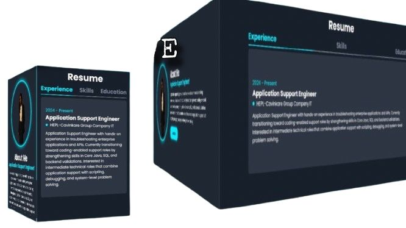

Application Support Engineer with 1.8 years of experience in production support, application troubleshooting, SQL-based analysis, API debugging, and incident management. Experienced in REST API validation using Postman, log analysis, and Root Cause Analysis (RCA) for issue resolution. Currently strengthening backend concepts through Core Java and Spring Boot to transition into L2/Application Support or Backend Support roles.
Application Support Engineer with 1.8 years of experience in production support, application troubleshooting, SQL-based analysis, API debugging, and incident management. Experienced in REST API validation using Postman, log analysis, and Root Cause Analysis (RCA) for issue resolution. Currently strengthening backend concepts through Core Java and Spring Boot to transition into L2/Application Support or Backend Support roles.
View MoreResolved application issues through troubleshooting and log analysis. Performed SQL queries and backend issue validation. Debugged REST APIs using Postman. Conducted RCA and supported incident resolution. Collaborated with development teams for issue fixing.
SQL
REST APIs
Postman
Troubleshooting
Incident Management
RCA
Linux(Basics)
Application Support
Core Java
Spring Boot(learning)
Completed Master of Computer Applications (MCA) with strong focus on programming fundamentals, database management systems, and application development concepts. Built a solid foundation in problem-solving, software lifecycle, and backend understanding.
Completed Bachelor of Computer Science, gaining fundamental knowledge in computer science concepts, logical thinking, and basic programming. Developed interest in software systems and technical problem-solving.

Built a responsive portfolio using HTML, CSS, and JavaScript to understand UI flow, frontend behavior, and issue troubleshooting.
HTML5, CSS3, JavaScript
Resolved application issues through troubleshooting and log analysis. Performed SQL queries and backend issue validation. Debugged REST APIs using Postman. Conducted RCA and supported incident resolution. Collaborated with development teams for issue fixing.
I am a sketch artist who creates customized hand-drawn artworks on paper. Drawing helped me develop creativity, patience, and strong visual understanding. As my interest grew, I started exploring digital platforms to bring my sketches into digital form and experiment with new styles.